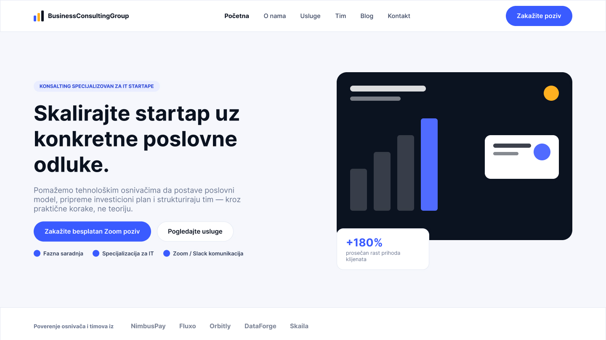
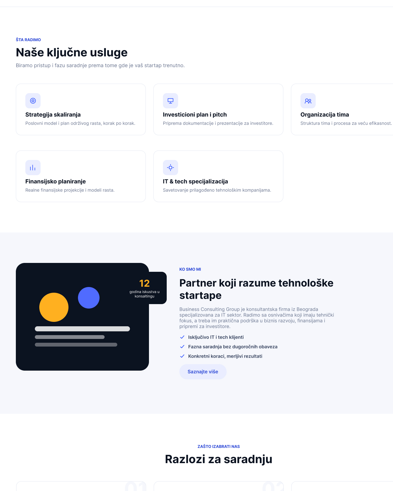
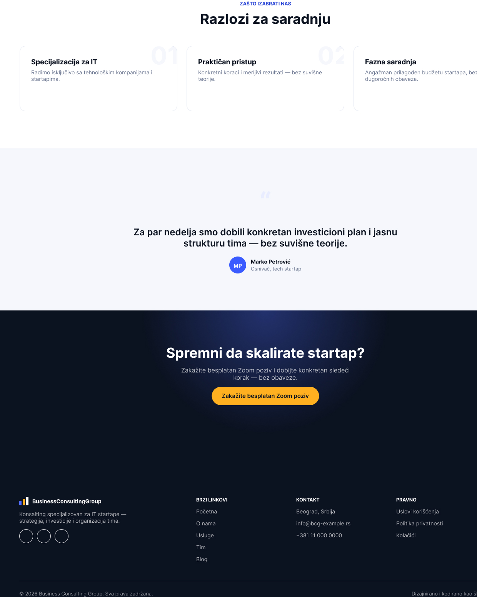

Wireframe početne strane pretvoren u finalni vizuelni dizajn — sa definisanom paletom boja, tipografijom i komponentama koje dalje nose ceo sajt.



Nakon što je struktura sajta Business Consulting Group utvrđena kroz wireframe, sledeći korak je bio da se početna strana obuče u finalan vizuelni jezik: boje koje komuniciraju poverenje i stabilnost, tipografska hijerarhija koja vodi oko kroz sadržaj i sistem komponenti koji se dalje ponavlja na ostatku sajta.
Posebna pažnja je posvećena hero sekciji — prvom utisku koji posetilac dobija — kao i jasnom pozivu na akciju koji ga vodi ka uslugama i kontaktu. Razmak, poravnanje i veličina elemenata su usklađeni tako da stranica deluje ozbiljno i pregledno, u skladu sa konsultantskim karakterom brenda.